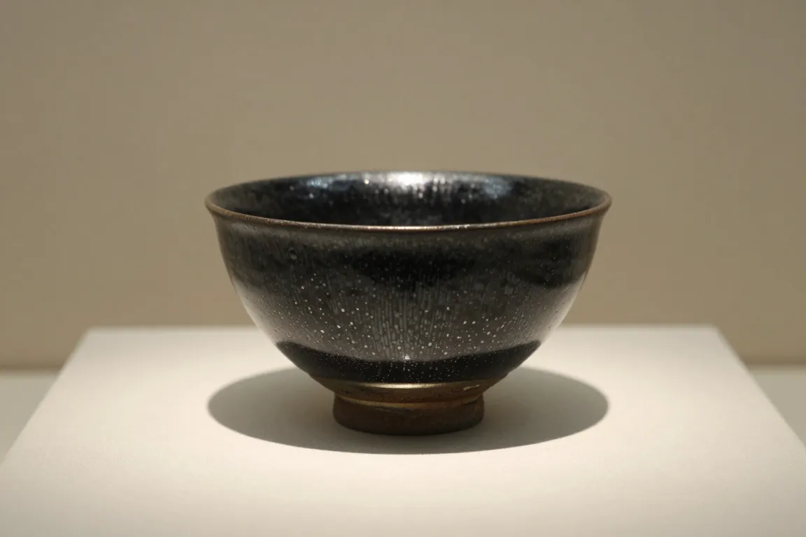

Dark stoneware tea bowls of the Song dynasty. A thick iron-rich glaze runs down the cone-shaped bowl in streaks and spots and pools in a bead at the foot.

Core thesis
A bowl for whisked white tea must be dark, so that the foam shows; the kiln, not the brush, makes the pattern in an iron-rich glaze.
Design principles
Make the bowl dark, because the white foam of whisked tea must show against it.
Throw a cone with a thick wall, 6 to 9 mm, to keep the tea hot.
Pull in the rim below the lip, so that the tea does not spill and the foam stays in the bowl.
Dip the bowl in an iron glaze that holds 5 to 9 per cent iron oxide.
Let the glaze run: stop it about 1 cm above the foot, where it ends in a thick bead.
Fire in reduction to about 1300 °C so that the iron forms streaks, drops and spots.
Leave the foot ring and the lower wall bare, in a dark grey or purple-brown clay.
Add a silver or copper band on the rim for a bowl of high rank.
Anti-patterns
A bright, clean white or cream body shown over the whole bowl
A painted or printed pattern on the glaze
A flat even glaze with no streaks, spots or bead at the foot
A thin porcelain wall that burns the hand when the tea is hot